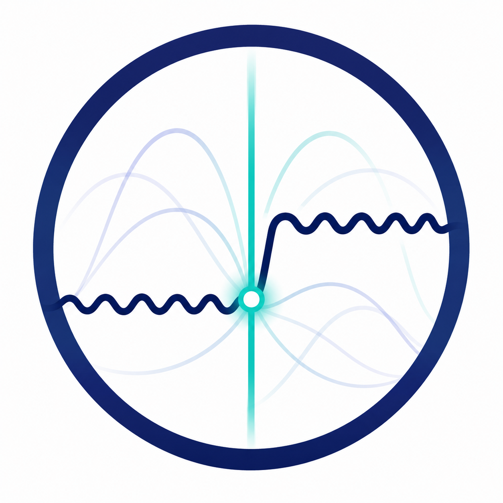
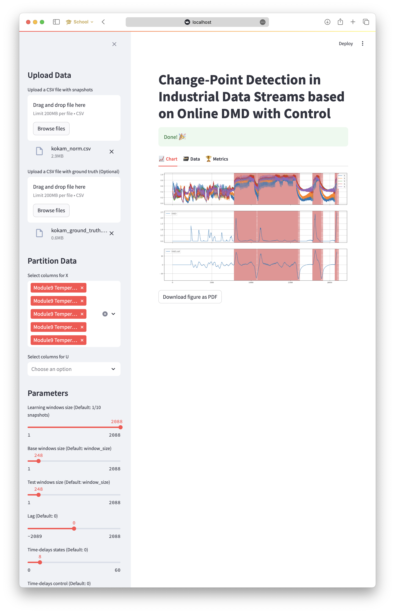

reshift
Catch the moment a machine or process changes its behaviour — live, before it becomes a failure.
Online, model-free change-point detection for noisy, multivariate industrial sensor streams.
Control-aware, noise-robust, and tuned to keep false alarms low — no physical model, no batch retraining.


Highlights¶
- Adaptive linearization -- ODMDwC tracks non-linear system behaviour online, keeping detected change magnitude proportional to the real shift.
- Control-aware -- exploits control inputs to tell operator-driven dynamics apart from genuine anomalies.
- Noise-robust -- truncated ODMDwC with higher-order time-delay embeddings captures broadband features and suppresses noise.
- Benchmark-leading -- outperforms SVD- and autoencoder-based CPD on the SKAB and CATS datasets (NAB score).
- Streaming-native -- built on
river: single-pass, constant-memory updates, no batch retraining or physical model. - Tunable by intuition -- practical hyperparameter guidance instead of black-box knobs.

Overview¶
As the energy sector races toward radical climate action, scaling new solutions is essential. Automated control has been crucial to efficient operations, and detecting unforeseen critical shifts can be a game-changer for safety.
This repository implements change-point detection (CPD) based on Online Dynamic Mode Decomposition with Control (ODMDwC). Designed for complex industrial systems where timely detection of behavioural shifts is critical, it captures both spatial and temporal system patterns and adapts dynamically to non-linear changes from factors like aging and seasonality. It addresses non-uniform data streams in safety-critical systems without depending on exhaustive physical models, leveraging control input to yield robust, intuitive results even under high noise.
Benchmark Evaluation¶
We validated our approach on both synthetic and real-world datasets, including:
-
SKAB Laboratory Water Circulation System
Algorithm NAB (standard) NAB (low FP) NAB (low FN) Perfect detector 54.77 54.11 56.99 CPD-DMD (\(t=0\)) 34.29 23.21 42.54 CPD-DMD (\(t=0.0025\)) 33.43 23.28 41.71 MSCRED 32.42 16.53 40.28 Isolation forest 26.16 19.50 30.82 T-squared+Q (PCA) 25.35 14.51 31.33 Conv-AE 23.61 21.54 27.55 LSTM-AE 23.51 20.11 25.91 T-squared 19.54 10.20 24.31 MSET 13.84 10.22 17.37 Vanilla AE 11.41 6.53 13.91 Vanilla LSTM 11.31 -3.80 17.25 Null detector 0.00 0.00 0.00 -
CATS Controlled Anomalies Dataset
Algorithm NAB (standard) NAB (low FP) NAB (low FN) Perfect detector 30.21 29.89 31.28 MSCRED 37.19 13.46 47.18 CPD-DMD (\(t=0\)) 25.66 20.62 29.84 CPD-DMD 17.84 15.01 20.06 Isolation forest (\(c=3.8\%\)) 17.81 15.84 20.00 T-squared+Q (PCA) 11.80 11.40 12.30 LSTM-AE 11.39 11.26 11.69 T-squared 15.15 14.98 15.71 MSET 14.48 13.43 15.60 Vanilla AE 2.52 2.44 2.77 Vanilla LSTM 0.73 0.70 0.82 Conv-AE 0.15 0.14 0.18 Null detector 0.00 0.00 0.00
📜 Citation¶
If you use this platform for academic purposes, please cite our publication:
@misc{wadinger2024changepointdetectionindustrialdata,
author ={Marek Wadinger and Michal Kvasnica and Yoshinobu Kawahara},
note = {Submitted to Applied Energy},
title ={Change-Point Detection in Industrial Data Streams based on Online Dynamic Mode Decomposition with Control},
url ={https://arxiv.org/abs/2407.05976},
year ={2024},
}
👐 Contributing¶
Feel free to contribute in any way you like, we're always open to new ideas and approaches.
- Feel welcome to open an issue if you think you've spotted a bug or a performance issue.
🛠 For Developers¶
Installation (for Local Use)¶
This project depends on Rust for some dependencies. If you have Rust installed and available in your PATH, you can use uv for fast dependency management. Otherwise, use the Docker approach for a containerized environment.
Option 1: Local Installation with uv (requires Rust)¶
If you have Rust installed, congratulations! You can use uv for faster dependency management:
uv sync
Option 2: Devcontainer (requires VSCode)¶
If you have VSCode installed, you can use the devcontainer feature to create a containerized environment. Just open the project in VSCode and click on the Reopen in Container button.
Option 3: Docker (recommended if Rust is not available)¶
If you don't have Rust installed, the Docker approach is the way to go:
docker build -t reshift .
docker run -p 8888:8888 -v .:/app reshift